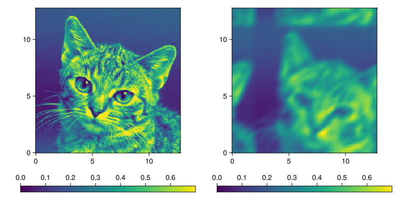
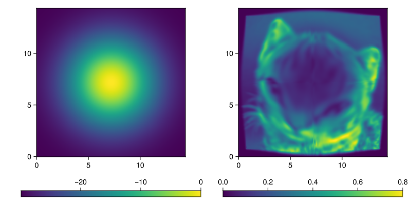

Finite Difference Methods for Transport
Spacial Finite Differences
module DifferentialOperators
<<differential-operators>>
endTo solve the above equations we use three differential operators: central_difference, upwind and laplacian, defined in the context of a 2-d stencil operation.
Central differences approximates the derivative on a grid by,
\[dy_i = \frac{y_{i+1} - y_{i-1}}{2\Delta x}.\]
We define two variants for directions on the grid.
central_difference(::Type{Val{1}}, a::AbstractMatrix, dx) =
(a[3, 2] - a[1, 2]) / (2dx)
central_difference(::Type{Val{2}}, a::AbstractMatrix, dx) =
(a[2, 3] - a[2, 1]) / (2dx)Upwind can be used when we know the derivative is being used in an advective context. If we are modeling flow, we better use the value in the direction where the flow is coming from,
\[dy_i = \begin{cases} \frac{y_{i+1} - y_{i}}{\Delta x} & \textrm{if} v < 0,\\ \frac{y_{i} - y_{i-1}}{\Delta x} & \textrm{if} v > 0 \end{cases}\]
In our implementation we also multiply with the velocity $v$ to prevent code duplication when expressing advective terms.
upwind(v::T, a1, a2, a3, dx) where {T} =
if v < zero(T)
v * (a3 - a2) / dx
else
v * (a2 - a1) / dx
end
upwind(::Type{Val{1}}, v, a::AbstractMatrix, dx) =
upwind(v, a[:, 2]..., dx)
upwind(::Type{Val{2}}, v, a::AbstractMatrix, dx) =
upwind(v, a[2, :]..., dx)Laplacian is an approximation for the second derivative. Since we differentiate twice we no longer have the annoying situation that the derivative lives "between" our spatial discretization,
\[\nabla^2 y_{i, j} = \frac{y_{i-1,j} + y_{i,j-1} + y_{i+1,j} + y_{i,j+1} - 4y_{i,j}}{\Delta x^2}.\]
laplacian(a::AbstractMatrix, dx) =
(a[1, 2] + a[2, 1] + a[3, 2] + a[2, 3] - 4 * a[2, 2]) / dx^2Solvers
Since we're trying to prevent complications, we use only explicit solvers for our PDE. We have forward Euler and Runge-Kutta 4 methods in place.
If you want better solvers, it should be possible (and relatively straight-forward) to implement this transport model using MethodOfLines.jl, but we haven't yet felt the need for that.
These methods modify the given input $y$ in-place.
module Solvers
using Unitful
function runge_kutta_4(::Type{T}, box) where {T}
U = typeof(1.0 * unit(T) / u"Myr")
k1 = Array{U}(undef, box.grid_size...)
k2 = Array{U}(undef, box.grid_size...)
k3 = Array{U}(undef, box.grid_size...)
k4 = Array{U}(undef, box.grid_size...)
function (df, y, t, dt)
k1 .= df(y, t)
k2 .= df(y .+ dt/2 .* k1, t + dt/2)
k3 .= df(y .+ dt/2 .* k2, t + dt/2)
k4 .= df(y .+ dt .* k3, t + dt)
y .+= (k1 .+ 2 .* k2 .+ 2 .* k3 .+ k4) .* (dt/6)
end
end
function forward_euler(df, y, t, dt)
y .+= dt .* df(y, t)
end
endAdvection
We are solving sediment transport using finite difference methods. Our active layer approach to transport can be written as an equation in terms of the sediment concentration,
\[\partial_t C = - d \nabla (C \nabla w),\]
where $C$ is the sediment concentration, $d$ the diffusion coefficient and $w$ the water depth. Similarly, we can set the transport equation when we enable wave transport,
\[\partial_t C = - d \nabla (C \nabla w) - v \nabla C + s C \nabla w,\]
where $v(w)$ is the wave transport velocity and $s(w)$ the wave transport shear. This is now no longer a diffusion equation per se, rather an advective system. When we solve the equations, the first term is expanded, so we get,
\[\partial_t C = -d \nabla^2 w C - d \nabla w \nabla C - v \nabla C + s \nabla w C,\]
collecting terms:
\[\partial_t C = - (d \nabla w + v) \nabla C + (s \nabla w - d \nabla^2 w) C.\]
Note that $\partial_t C$ is a component of $\partial_t \eta$, and $\nabla \eta = - \nabla w$. So in that context this advection equation enacts diffusion.
d = diffusivity
v, s = wave_velocity(w[2, 2])
dw = (central_difference(Val{1}, w, dx), central_difference(Val{2}, w, dx))
adv = upwind(Val{1}, d * dw[1] + v[1], C, dx) +
upwind(Val{2}, d * dw[2] + v[2], C, dx)
rct = (s[1] * dw[1] + s[2] * dw[2] - d * laplacian(w, dx)) * C[2, 2]
return rct - advAdaptive integration
To get efficient time integration we need to work with adaptive time-stepping. On each iteration we pre-compute the advection coefficients, and then the maximum time-step. Using the same pre-computed coefficients we then loop $n$ times such that $dt/n \le dt_{\textrm{max}}$.
Computing advection coefficients
Although this is a stencil operation, it is easier to compute this step directly. This way, we can compute dw and ddw with a single look-up of neighbouring grid cells. We store dw in a Vec2, expecting the wave_velocity to do the same.
Here adv stands for advection term and rct for reaction term, given the generic case
\[dC = - \textrm{adv} \nabla C + \textrm{rct} C\]
function advection_coef!(box::Box{BT}, diffusivity, wave_velocity, w, adv, rct) where {BT}
d = diffusivity
dx = box.phys_scale
di = (CartesianIndex(1, 0), CartesianIndex(0, 1))
for i = eachindex(IndexCartesian(), w)
v, s = wave_velocity(w[i])
wx1 = get_bounded(BT, w, i - di[1])
wx2 = get_bounded(BT, w, i + di[1])
wy1 = get_bounded(BT, w, i - di[2])
wy2 = get_bounded(BT, w, i + di[2])
dw = Vec2((wx2 - wx1) / (2dx), (wy2 - wy1) / (2dx))
ddw = (wx1 + wx2 + wy1 + wy2 - 4*w[i]) / dx^2
adv[i] = d * dw + v
rct[i] = dot(s, dw) - d * ddw
end
endGiven the advection coefficients we can figure out what the maximal timestep should be.
function max_dt(adv, dx, courant_max)
u(a) = abs(a[1]) + abs(a[2])
return courant_max / maximum(u.(adv) ./ dx)
endCompute dC
Once we know our time step, we can use the adv and rct coefficients to evaluate the sediment transport. We again can't use the stencil or finite difference functionalities, since that would do needless computations.
function transport_dC!(box::Box{BT}, adv, rct, C, dC) where {BT}
dx = box.phys_scale
di = (CartesianIndex(1, 0), CartesianIndex(0, 1))
@inline upwind(v::T, a, i, di) where {T} =
if v < zero(T)
v * (get_bounded(BT, a, i+di) - a[i]) / dx
else
v * (a[i] - get_bounded(BT, a, i-di)) / dx
end
for i = eachindex(IndexCartesian(), dC)
dC[i] = rct[i] * C[i] - upwind(adv[i][1], C, i, di[1]) - upwind(adv[i][2], C, i, di[2])
end
return dC
endmodule Advection
using ....CarboKitten: Box
using ...Stencil: stencil!, Size
using ...BoundaryTrait: get_bounded
using ..DifferentialOperators: central_difference, upwind, laplacian
using Unitful
using GeometryBasics
using LinearAlgebra: dot
<<advection-coef>>
"""
transport!(box, diffusivity, wave_velocity,
C, w, dC)
Computes `dC` given a `box`, `diffusivity` constant in units of m/Myr,
`wave_velocity` is a function of water depth, returning both velocity in units
of m/Myr, and shear in units of 1/Myr, which should be the derivative of the
velocity w.r.t. water depth. `C` is the concentration of entrained sediment,
`w` the water depth, and `dC` the output derivative of `C`.
"""
function transport!(box::Box{BT}, diffusivity, wave_velocity, C, w, dC) where {BT}
dx = box.phys_scale
stencil!(BT, Size(3, 3), dC, C, w) do C, w
<<advection-transport>>
end
end
"""
transport(box, diffusivity, wave_velocity, wave_shear,
C, w)
Non-mutating version of [`transport!`](@ref). Allocates and returns `dC`.
"""
function transport(box::Box{BT}, diffusivity, wave_velocity, C::AbstractArray{T}, w) where {BT, T}
dC = Array{typeof(1.0 * Unitful.unit(T) / u"Myr")}(undef, box.grid_size...)
transport!(box, diffusivity, wave_velocity, C, w, dC)
return dC
end
endTests
The following set of tests all involve mutilating a picture of a kitten. The default settings for TestModel have zero wave velocity and diffusivity. We'll enable them one by one. Note again, that what we call diffusivity, in the context of these tests doesn't necessarily behave like diffusion.
module Runner
using CarboKitten
using ProgressLogging
n_steps(input) = input.time.steps
function run_model(f, ::Type{Model{M}}, input) where {M}
state = M.initial_state(input)
f(0, state)
@progress for i = 1:n_steps(input)
M.step!(input, state)
f(i, state)
end
return state
end
do_nothing(_i, _s) = ()
run_model(::Type{Model{M}}, input) where {M} = run_model(do_nothing, Model{M}, input)
endmodule TestModel
using CarboKitten
using CarboKitten.Transport.Advection: transport
using Unitful
@kwdef struct Input
box::Box
time::TimeProperties
initial_state::Array{Float64}
topography::Array{typeof(1.0u"m")}
diffusivity = 0.0u"m/Myr"
wave_velocity = _ -> ((0.0u"m/Myr", 0.0u"m/Myr"), (0.0u"1/Myr", 0.0u"1/Myr"))
solver
end
@kwdef mutable struct State
time::typeof(1.0u"Myr")
value::Array{Float64}
end
initial_state(input) = State(
time = input.time.t0,
value = copy(input.initial_state))
function step!(input, state)
input.solver(
(a, t) -> transport(
input.box, input.diffusivity, input.wave_velocity,
a, .-input.topography),
state.value, state.time, input.time.Δt)
state.time += input.time.Δt
end
endWave induced advection
With only wave induced advection enabled, we should see a clear translation of the picture of the kitten. The additional diffusion is so called false diffusion, a numerical artifact of the upwind differencing scheme.

#| creates: docs/src/_fig/flying_cat.png
#| collect: figures
module FlyingCat
include("runner.jl")
include("test_model.jl")
using CarboKitten
using FileIO
using GLMakie
using CarboKitten.Transport.Solvers: forward_euler, runge_kutta_4
GLMakie.activate!()
const BOX = CarboKitten.Box{Periodic{2}}(
grid_size=(256, 256), phys_scale=0.05u"km")
const INPUT = TestModel.Input(
box = BOX,
time = TimeProperties(Δt=100u"yr", steps=50),
topography = zeros(typeof(1.0u"m"), BOX.grid_size),
initial_state = load("data/cat256.pgm")'[:, end:-1:1] .|> Float64,
wave_velocity = _ -> ((0.4u"m/yr", -0.3u"m/yr"), (0.0u"1/yr", 0.0u"1/yr")),
solver = runge_kutta_4(Float64, BOX)
)
function run()
x, y = box_axes(INPUT.box)
fig = Figure(size=(800, 400))
ax1 = Axis(fig[1, 1], aspect=1)
hm1 = heatmap!(ax1, x, y, INPUT.initial_state, colorrange=(0.0,0.7))
Colorbar(fig[2, 1], hm1, vertical=false)
out = Runner.run_model(Model{TestModel}, INPUT)
ax2 = Axis(fig[1, 2], aspect=1)
hm2 = heatmap!(ax2, x, y, out.value, colorrange=(0.0,0.7))
Colorbar(fig[2, 2], hm2, vertical=false)
save("docs/src/_fig/flying_cat.png", fig)
end
end
FlyingCat.run()Diffusion
Next, we only enable the diffusivity term. We set a topography of a single Gaussian peak in the center of the box. Sediment is dispersed down slope.

#| creates: docs/src/_fig/exploding_kitten.png
#| collect: figures
module ExplodingKitten
include("runner.jl")
include("test_model.jl")
using CarboKitten
using FileIO
using GLMakie
using CarboKitten.Transport.Solvers: runge_kutta_4
GLMakie.activate!()
const N = 288
function load_cat()
b = div(N - 256, 2)
cat = zeros(Float64, N, N)
cat[b+1:256+b, b+1:256+b] .= (load("data/cat256.pgm")'[:, end:-1:1] .|> Float64)
return cat
end
const BOX = CarboKitten.Box{Reflected{2}}(grid_size=(N, N), phys_scale=0.05u"km")
const X, Y = box_axes(BOX)
const INPUT = TestModel.Input(
box = BOX,
time = TimeProperties(Δt=100u"yr", steps=100),
initial_state = load_cat(),
topography = ((x, y) -> 30.0u"m" * exp(-((x-7.2u"km")^2 + (y-7.2u"km")^2)/(2*(3.0u"km")^2)) - 30.0u"m").(X, Y'),
diffusivity = 30.0u"m/yr",
solver = runge_kutta_4(Float64, BOX)
)
function run()
x, y = box_axes(INPUT.box)
fig = Figure(size=(800, 400))
ax1 = Axis(fig[1, 1], aspect=1)
hm1 = heatmap!(ax1, x, y, INPUT.topography / u"m")
Colorbar(fig[2,1], hm1, vertical=false)
out = Runner.run_model(Model{TestModel}, INPUT)
ax2 = Axis(fig[1, 2], aspect=1)
hm2 = heatmap!(ax2, x, y, out.value, colorrange=(0.0,0.8))
Colorbar(fig[2,2], hm2, vertical=false)
save("docs/src/_fig/exploding_kitten.png", fig)
end
end
ExplodingKitten.run()Scale invariance
From the conception of the transport model, it should be evident that the solution to the transport equations should be scale invariant, in the sense that we can multiply $C$ by any constant, solve the equations, then divide by the same constant and arrive at the same result.
using CarboKitten
using CarboKitten: Box, box_axes
using CarboKitten.Components.TimeIntegration: time
using CarboKitten.Transport.Solvers: runge_kutta_4
using CarboKitten.Transport.Advection: transport
using CarboKitten.Testing: transport_test_input
using Unitful
@testset "CarboKitten.Transport.Advection.scale-invariance" begin
# test transport code for scale invariance
let box = Box{Periodic{2}}(grid_size=(32, 32), phys_scale=1.0u"m")
solver = runge_kutta_4(Float64, box)
wave_velocity = _ -> ((0.5u"m/s", 0.0u"m/s"), (0.0u"1/s", 0.0u"1/s"))
diffusivity = 5.0u"m/s"
w = randn(box.grid_size...) * u"m"
C1 = randn(box.grid_size...)
C2 = C1 .* 10.0
dt = 1.0u"s"
df(C, _) = transport(box, diffusivity, wave_velocity, C, w)
for i = 1:10
solver(df, C1, 0.0u"s", dt)
solver(df, C2, 0.0u"s", dt)
end
@test isapprox(C1 .* 10.0, C2)
end
end
<<test-wave-transport>>Test onshore transport
The center of mass of an initial sediment distribution - taken to be a Gaussian bell curve - should move with the same speed as the onshore (wave) velocity while applying some tolerance for inaccuracies from the finite difference scheme for solving the PDEs.
@testset "CarboKitten.Transport.Advection.wave-transport" begin
function gaussian_initial_sediment(x, y)
exp(-(x-10u"km")^2 / (2 * (0.5u"km")^2)) * 30.0u"m"
end
v_const(v_max) = _ -> (Vec2(v_max, 0.0u"m/yr"), Vec2(0.0u"1/yr", 0.0u"1/yr"))
input = transport_test_input(
initial_topography = (x, y) -> -35.0u"m",
initial_sediment = gaussian_initial_sediment,
disintegration_rate = 50000.0u"m/Myr",
wave_velocity = v_const(-5u"km/Myr")
)
function center_of_mass(m, x)
total_mass = sum(m) # Total mass
if total_mass ≈ 0.0u"m"
return NaN * u"m" # Avoid division by zero
end
x_com = sum(x .* sum(m, dims=2)) / total_mass # Weighted average along x
return x_com
end
state = ALCAP.initial_state(input)
result = []
times = []
run_model(Model{ALCAP}, input, state) do i, delta
if mod(i-1, 250) == 0
push!(result, deepcopy(state.sediment_height))
push!(times, time(input, state))
end
end
(x, y) = box_axes(input.box)
com_positions = [center_of_mass(r, x) for r in result]
@assert length(com_positions) == length(times)
observed_speeds = (com_positions[2:end] .- com_positions[1:end-1]) ./
(times[2:end] .- times[1:end-1])
# Extract the expected speed from the wave transport
expected_speed = input.facies[1].wave_velocity(0.0u"m")[1][1]
tolerance = 1e-6 * expected_speed # Set a tolerance for the comparison
# Check if all speeds are within tolerance
for speed in observed_speeds
@test speed ≈ expected_speed atol=tolerance
end
end